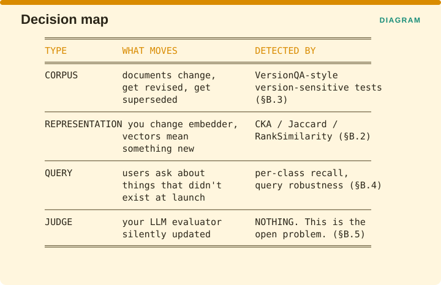

Measuring Retrieval › Integrity and Drift
Part
Representation, versions, robustness, freshness, and judge stability
Every metric in Part A is computed at a single instant. Integrity asks the only question that still matters six months later.
Does that instant still describe the system?
This is the least instrumented of the four dimensions, and the reason is structural rather than cultural. Drift metrics require a baseline to compare against, and a baseline requires that somebody six months ago had the foresight to freeze one. Most teams did not, which means the first time anyone asks whether the system has drifted, the honest answer is that there is nothing to compare against.

Corpus drift is documents changing, being revised, or being superseded, and it is detected by version-sensitive tests of the kind §B.3 describes. Representation drift is what happens when you change embedder and the vectors start meaning something different, and it is detected by CKA, Jaccard and RankSimilarity in §B.2. Query drift is users asking about things that did not exist at launch, and it is detected by per-class recall and query robustness testing in §B.4. Judge drift is your evaluation model being silently updated, and it is detected by nothing at all, which is why §B.5 treats it as the open problem of this part.
Each type has a different detector, and a metric built for one is completely blind to the others. A team reporting that drift is green almost always means one of these four, and usually cannot say which.
Measuring Retrieval · Madhava Gaikwad · First edition, September 2026